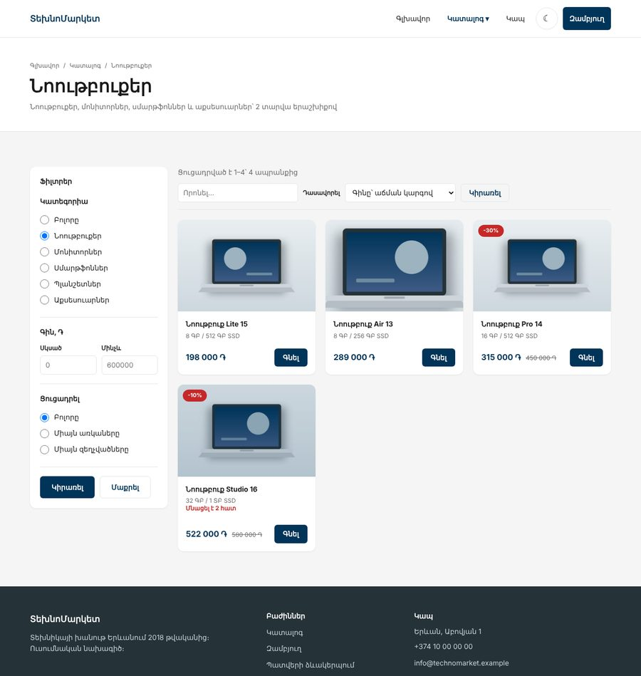
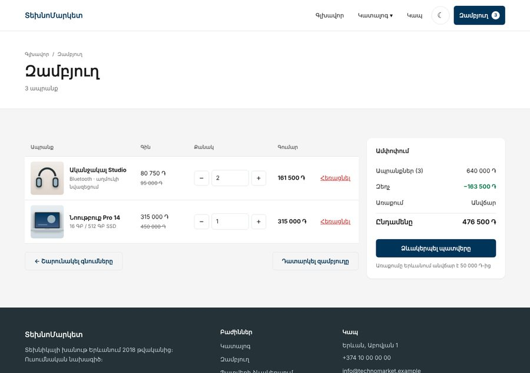
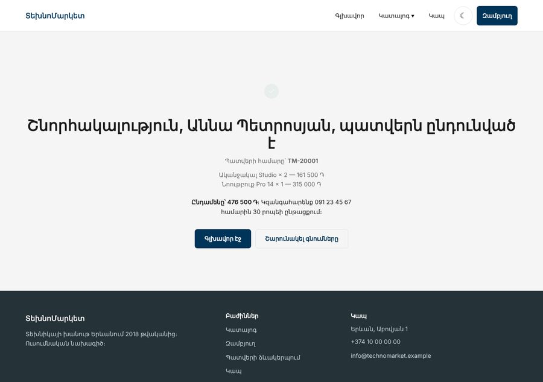
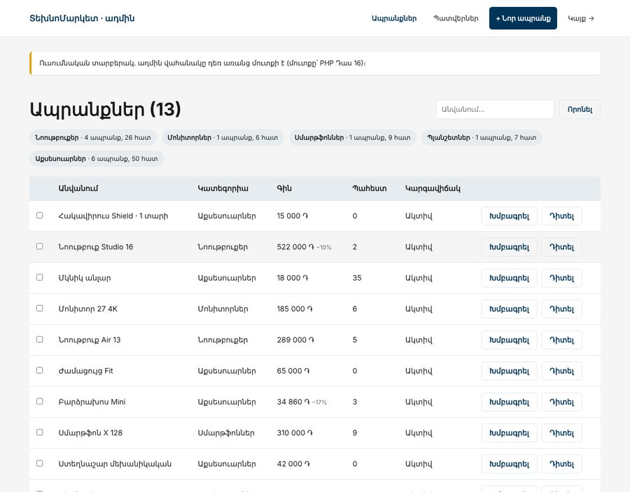
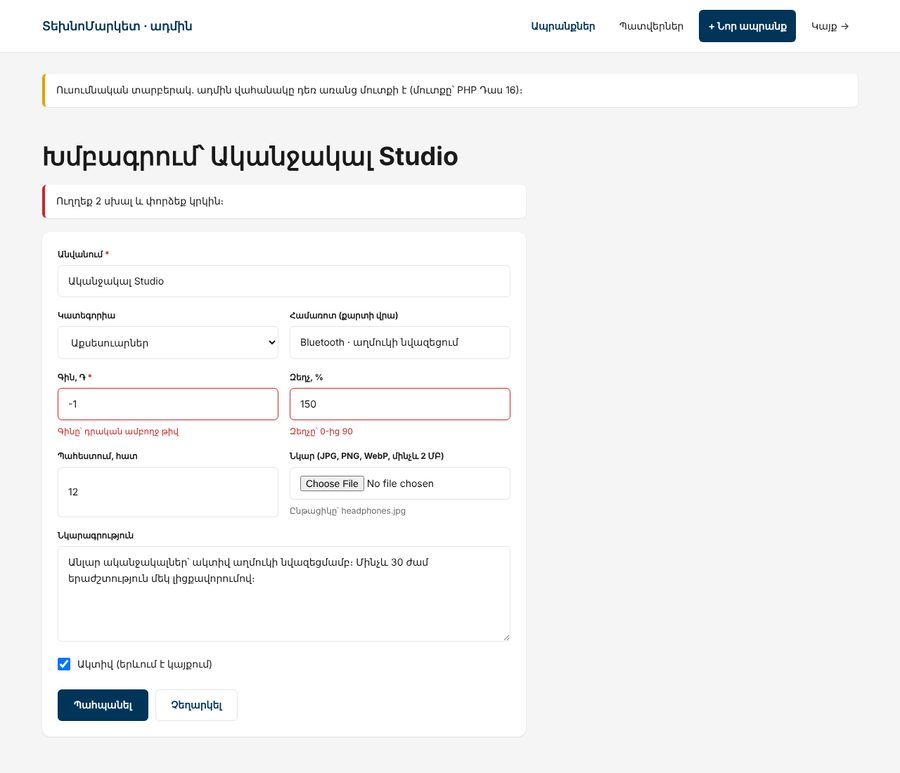
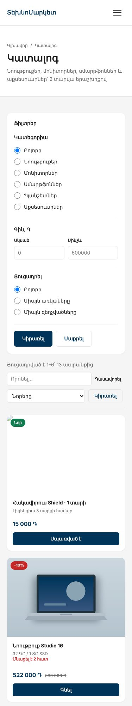
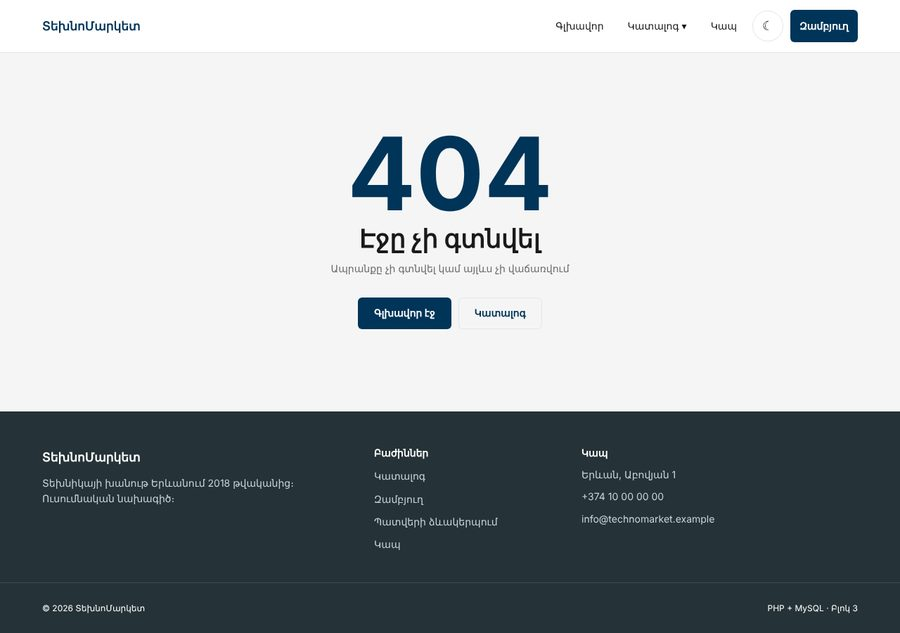

Առաջադրանք 1 / 3 · PHP Դաս 01–11 · ընթացքում + 1 շաբաթ
Ամեն դասից հետո ՏեխնոՄարկետը ստանում է մեկ նոր սերվերային կտոր․ շաբլոններ, ֆորմաներ, սեսիա, բազա, ադմին։ Դասի վերջում քո Բլոկ 1-ի էջերը կարդում են ապրանքները MySQL-ից, իսկ զամբյուղը և պատվերը աշխատում են առանց JavaScript-ի։ Համեմատիր քեզ օրինակ 1-ի հետ, բայց միայն ավարտելուց հետո։
Բլոկ 1–2-ի ՏեխնոՄարկետը արտաքինից նույնն է, բայց հիմա ամեն էջ կառուցում է PHP-ն։ Ապրանքները բազայում են, ֆիլտրերը և էջավորումը URL-ում, զամբյուղը սեսիայում, պատվերը պահվում է տրանզակցիայով և նվազեցնում պահեստը, իսկ ադմինը ավելացնում և խմբագրում է ապրանքները՝ նկարով։ Ոչ մի տող JavaScript։







| Էջ | Ինչ է անում PHP-ն | Դաս |
|---|---|---|
index.php | Նոր ապրանքներ և զեղչեր բազայից | 5, 10 |
catalog.php | Կատեգորիա, գին, առկայություն, որոնում, դասավորում, էջավորում․ ամբողջը՝ URL-ում | 6, 10 |
product.php?slug=… | Ապրանքի էջ, «Նման ապրանքներ», 404 անհայտ slug-ի դեպքում | 5, 10 |
cart.php | Տողերը, −/+, հեռացում, դատարկում, ամփոփում (առաքումը՝ 50 000 ֏-ից անվճար) | 7 |
checkout.php, thanks.php | Վալիդացիա, պատվեր տրանզակցիայով, պահեստի նվազեցում | 6, 9, 11 |
contact.php | Կապի ֆորմա՝ PRG և flash | 6, 7 |
admin/ | Ապրանքների CRUD, նկարի վերբեռնում, որոնում, զանգվածային արխիվացում, պատվերներ | 7, 9, 11 |
Աշխատում ես քո Բլոկ 1-ի նախագծի պատճենի վրա, ինչպես PHP Դաս 1-ում․ HTML-ը արդեն կա, PHP-ն այն դարձնում է դինամիկ։ Եթե նախագիծդ ավարտված չէ, վերցրու Բլոկ 1-ի օրինակը։ starter/task-1/-ում կա միայն այն, ինչ պետք չէ հորինել․
Դաս 8–9-ում products, categories, orders աղյուսակները գրում ես դասարանում։ Նախագծին պետք են ևս մի քանի սյունակ (orders.delivery, address, payment)։ Ավելացրու դրանք ALTER TABLE-ով (Դաս 9) և համեմատիր քո արդյունքը schema.sql-ի հետ։ Եթե ժամանակ չկա, կատարիր այն ամբողջությամբ․ այն ջնջում և նորից ստեղծում է բազան։
Երկու ֆայլն էլ սկսվում են SET NAMES utf8mb4;-ով։ Առանց դրա mysql -u root < seed.sql-ը կարող է հայերենը պահել «Õ†Õ¸Õ¸...» տեսքով, թեև բազան utf8mb4 է։ HeidiSQL-ը և phpMyAdmin-ը դա անում են ինքնաբերաբար։
| Դաս | Ինչ ես ավելացնում նախագծում | Քայլ |
|---|---|---|
| 01 | Laragon, .html → .php, դինամիկ տարեթիվ, dd() | 1 |
| 02–03 | Ապրանքները՝ զանգվածից foreach-ով, functions.php, header/footer-ը մեկ տեղում | 2 |
| 04 | AI-ի context.txt քո նախագծի համար, finalPrice()-ի վերանայում | 2 |
| 05 | e(), render(), views/layout.php, XSS-ի փորձ | 3 |
| 06 | Կապի ֆորմա՝ վալիդացիա, PRG | 4 |
| 07 | bootstrap.php, սեսիա, flash, զամբյուղ, թեմա cookie-ով | 5 |
| 08–09 | Բազան, seed.sql, JOIN-ներ | 6 |
| 10 | PDO, կատալոգը բազայից՝ ֆիլտրերով և էջավորումով | 7 |
| 11 | Ադմին CRUD, պատվեր տրանզակցիայով | 8 |
Քայլերը կրկնում են դասերի դասարանականը, բայց ոչ դատարկ էջում, այլ ՏեխնոՄարկետի բոլոր էջերում։ Դասից հետո կայքը միշտ բացվում է և աշխատում է․ եթե մեկ շաբաթ բաց թողնես, հաջորդ քայլը կարող ես սկսել օրինակից։
C:\laragon\www\technomarket\ և բաց արա http://technomarket.test.html → .php և հղումները՝ նույնպես (catalog.html → catalog.php)<?= date('Y') ?>, ֆայլերի սկզբում՝ սխալների ցուցադրումը (Դաս 01, բաժին 06)data.php՝ 12 ապրանքը զանգվածով (starter/task-1/sql/seed.sql-ից)։ Դաս 10-ում այն կջնջեսforeach-ով։ Քարտի HTML-ը նույնն է, ինչ Բլոկ 1-ում, որ CSS-ը չփոխեսfunctions.php՝ declare(strict_types=1), formatPrice(), finalPrice()։ Header-ը և footer-ը՝ partials/, __DIR__-ովfinalPrice()-ը վերանայման ռեժիմով․ ի՞նչ կլինի discount = 150-ի դեպքումpartials/-ի փոխարեն՝ մեկ views/layout.php և ամեն էջի բովանդակությունը՝ views/pages/-ում։ Ամեն էջ-ֆայլ դառնում է «կոնտրոլեր»․ տվյալներ → շաբլոն → layout։ Որ ամեն էջում չկրկնես երկու render(), ավելացրու renderPage()։
function render(string $view, array $data = []): string
{
extract($data, EXTR_SKIP);
ob_start();
require __DIR__ . "/views/{$view}.php";
return ob_get_clean();
}
/** Էջը layout-ի մեջ — Դաս 5-ի երկու render()-ը մեկ տեղում */
function renderPage(string $view, array $data, string $title, string $active = ''): void
{
echo render('layout', [
'title' => $title,
'active' => $active,
'content' => render($view, $data),
]);
}require_once __DIR__ . '/bootstrap.php';
$product = getProductBySlug((string) ($_GET['slug'] ?? ''));
if ($product === null) {
notFound('Ապրանքը չի գտնվել կամ այլևս չի վաճառվում'); // 404, ոչ դատարկ էջ ⭐
}
renderPage('pages/product', [
'product' => $product,
'related' => getRelated($product),
'inCart' => cart()[$product['id']] ?? 0,
], $product['name'] . ' — ' . SITE_NAME, 'catalog');Ավելացրու ադմինում (Քայլ 8) ապրանք <script>alert(1)</script> անունով։ Այն պետք է երևա որպես տեքստ բոլոր էջերում՝ քարտում, ապրանքի էջում, զամբյուղում, ադմինում և <title>-ում։ Եթե որևէ տեղ alert է բացվում, այնտեղ e()-ն բացակայում է։
Կապի ֆորման՝ Դաս 6-ի կոդով։ Պատվերի և ադմինի ֆորմաներում նույն երեք կտորը կկրկնվի ամեն դաշտում (դաս, aria-invalid, սխալի տեքստ), ուստի գրիր դրանք մեկ անգամ․
function inputClass(array $errors, string $key, string $extra = ''): string
{
return trim('input ' . $extra . (isset($errors[$key]) ? ' input--error' : ''));
}
function ariaError(array $errors, string $key): string
{
return isset($errors[$key])
? 'aria-invalid="true" aria-describedby="' . e($key) . '-error"'
: '';
}
function fieldError(array $errors, string $key): string
{
return isset($errors[$key])
? '<p class="field__error" id="' . e($key) . '-error">' . e($errors[$key]) . '</p>'
: '';
}<div class="field">
<label for="name" class="field__label">Անուն <span class="req" aria-hidden="true">*</span></label>
<input type="text" id="name" name="name" maxlength="60" autocomplete="name"
class="<?= inputClass($errors, 'name') ?>" value="<?= e($old['name'] ?? '') ?>" <?= ariaError($errors, 'name') ?>>
<?= fieldError($errors, 'name') ?>
</div>/** Տեքստային դաշտի սխալը կամ null — կրկնվող ստուգումը մեկ տեղում */
function textError(string $value, int $min, int $max, string $label): ?string
{
$len = mb_strlen($value);
if ($min > 0 && $value === '') {
return "Խնդրում ենք լրացնել {$label} դաշտը";
}
if ($len < $min) {
return "{$label} դաշտը՝ առնվազն {$min} նիշ";
}
if ($len > $max) {
return "{$label} դաշտը՝ առավելագույնը {$max} նիշ"; // ⭐ վերին սահման ամեն դաշտում — PHP Դաս 6
}
return null;
}bootstrap.php՝ ամեն էջի առաջին տողը։ Այնտեղ՝ session_start() անվտանգ պարամետրերով և բոլոր require_once-ներըcart-functions.php (ոչ cart.php․ այդ անունը զամբյուղի էջինն է)։ Սեսիայում՝ միայն [id => քանակ], գինը՝ միշտ բազայիցPOST ֆորմա, back դաշտով, որ վերադառնաս նույն էջը, նույն ֆիլտրերովtheme.php, որը դնում է cookie, իսկ layout-ը՝ <html data-theme="dark">։ Բլոկ 2-ի CSS-ը արդեն աշխատում է դրանով<article class="card<?= $p['stock'] === 0 ? ' is-out' : '' ?>">
<?php if ($p['discount'] > 0): ?>
<span class="card__badge">-<?= $p['discount'] ?>%</span>
<?php elseif (strtotime($p['created_at']) > strtotime('-30 days')): ?>
<span class="card__badge card__badge--new">Նոր</span>
<?php endif; ?>
<picture class="card__media ratio-3-2">
<img class="img-cover" src="/images/<?= e($p['image'] ?? 'placeholder.jpg') ?>"
alt="<?= e($p['name']) ?>" width="600" height="400" loading="lazy">
</picture>
<div class="card__body">
<h3 class="card__title"><a href="<?= e($url) ?>"><?= e($p['name']) ?></a></h3>
<p class="card__meta"><?= e($p['specs']) ?></p>
<?php if ($p['stock'] > 0 && $p['stock'] <= 3): ?>
<p class="card__warning">Մնացել է <?= $p['stock'] ?> հատ</p>
<?php endif; ?>
<div class="card__footer">
<p class="card__price">
<?= formatPrice($p['final_price']) ?>
<?php if ($p['discount'] > 0): ?><del><?= formatPrice($p['price']) ?></del><?php endif; ?>
</p>
<?php if ($p['stock'] > 0): ?>
<!-- Վիճակ է փոխում → POST, ոչ հղում — PHP Դաս 7 -->
<form method="post" action="/cart-add.php">
<input type="hidden" name="id" value="<?= $p['id'] ?>">
<input type="hidden" name="back" value="<?= e($back ?? '/') ?>">
<button type="submit" class="btn btn--primary btn--sm">Գնել<span class="visually-hidden"> <?= e($p['name']) ?></span></button>
</form>
<?php else: ?>
<button type="button" class="btn btn--primary btn--sm" disabled>Սպառված է</button>
<?php endif; ?>
</div>
</div>
</article>require_once __DIR__ . '/bootstrap.php';
requirePost();
$id = filter_var($_POST['id'] ?? '', FILTER_VALIDATE_INT);
$qty = filter_var($_POST['qty'] ?? '1', FILTER_VALIDATE_INT, ['options' => ['min_range' => 1, 'max_range' => MAX_QTY]]);
$product = $id === false ? null : (getProductsByIds([$id])[$id] ?? null);
if ($product === null) {
flash('error', 'Ապրանքը չի գտնվել');
} elseif ($qty === false) {
flash('error', 'Քանակը՝ 1-ից ' . MAX_QTY); // curl -d qty=999999 → այստեղ ⭐
} elseif ($product['stock'] < 1) {
flash('error', 'Ապրանքը սպառված է');
} else {
cartAdd($id, $qty, $product['stock']);
flash('success', 'Ավելացվեց զամբյուղ՝ ' . $product['name']);
}
redirect(safeBack($_POST['back'] ?? '/'));Ականջակալը պահեստում 14 է, իսկ MAX_QTY-ը՝ 10։ Մկնիկը՝ 35։ Բարձրախոսը՝ միայն 3։ Եթե cartAdd()-ը չիմանա պահեստի մասին, զամբյուղում կլինի 10 բարձրախոս, և սխալը կերևա միայն պատվերի պահին։ Ուստի երրորդ պարամետրը՝ $limit։
products, categories, orders, order_items աղյուսակներին ավելացրու պատվերի դաշտերը, ապա կատարիր seed.sql-ըON DELETE RESTRICT-ը թույլ չի տա։ Ահա թե ինչու ադմինը արխիվացնում է, ոչ ջնջումCREATE TABLE orders (
id INT UNSIGNED AUTO_INCREMENT PRIMARY KEY,
customer_name VARCHAR(100) NOT NULL,
email VARCHAR(190) NULL,
phone VARCHAR(30) NOT NULL,
delivery ENUM('courier', 'pickup', 'region') NOT NULL DEFAULT 'courier',
region VARCHAR(40) NULL,
address VARCHAR(255) NULL,
payment ENUM('cash', 'card') NOT NULL DEFAULT 'cash',
comment VARCHAR(500) NULL,
shipping DECIMAL(10,2) NOT NULL DEFAULT 0,
total DECIMAL(10,2) NOT NULL,
status ENUM('new', 'paid', 'shipped', 'cancelled') NOT NULL DEFAULT 'new',
created_at DATETIME NOT NULL DEFAULT CURRENT_TIMESTAMP
) ENGINE=InnoDB;data.php-ի փոխարեն՝ db.php և products.php։ Կատալոգի ամբողջ վիճակը URL-ում է․ readFilters()-ը ստուգում է այն, buildWhere()-ը կառուցում է SQL-ը միայն եղած ֆիլտրերով (Դաս 10-ի տնային)։
/** URL-ի պարամետրերը → ստուգված ֆիլտրեր։ Անհայտ արժեքը դառնում է լռելյայն */
function readFilters(array $query): array
{
$category = getCategoryBySlug((string) ($query['category'] ?? ''));
$stock = (string) ($query['stock'] ?? 'all');
return [
'category' => $category['slug'] ?? null,
'category_id' => $category['id'] ?? null,
'q' => mb_substr(trim((string) ($query['q'] ?? '')), 0, 100),
'min' => queryInt($query, 'min'),
'max' => queryInt($query, 'max'),
'stock' => array_key_exists($stock, STOCK_FILTERS) ? $stock : 'all',
];
}function buildWhere(array $filters): array
{
$where = ['p.is_active = 1'];
$params = [];
if ($filters['category_id'] !== null) {
$where[] = 'p.category_id = :category';
$params['category'] = (int) $filters['category_id'];
}
if ($filters['q'] !== '') {
// ⭐ %-ը արժեքի մեջ է, ոչ SQL-ում։ Իսկ օգտագործողի % և _ նշանները փախցնում ենք
$where[] = '(p.name LIKE :q OR p.specs LIKE :q2)';
$like = '%' . addcslashes($filters['q'], '%_\\') . '%';
$params['q'] = $like;
$params['q2'] = $like;
}
if ($filters['min'] !== null) {
$where[] = FINAL_PRICE . ' >= :min';
$params['min'] = $filters['min'];
}
if ($filters['max'] !== null) {
$where[] = FINAL_PRICE . ' <= :max';
$params['max'] = $filters['max'];
}
if ($filters['stock'] === 'in') {
$where[] = 'p.stock > 0';
} elseif ($filters['stock'] === 'sale') {
$where[] = 'p.discount > 0';
}
return [implode(' AND ', $where), $params];
}function normalizeProduct(array $row): array
{
foreach (['id', 'category_id', 'price', 'discount', 'stock', 'final_price'] as $key) {
if (isset($row[$key])) {
$row[$key] = (int) $row[$key];
}
}
$row['is_active'] = (bool) ($row['is_active'] ?? true);
return $row;
}price DECIMAL(10,2)-ը PDO-ից գալիս է "450000.00" տողով։ strict_types-ով formatPrice(int $price)-ը կգցի TypeError։ Փոխարկում ենք մեկ տեղում՝ normalizeProduct()-ում, և ամեն ֆունկցիա վերադարձնում է արդեն ճիշտ տիպերով տողեր։ Ադմինի ֆորմայում նույնը․ "450000.00"-ը FILTER_VALIDATE_INT-ով չի անցնի։
admin/index.php՝ բոլոր ապրանքները, նաև արխիվացվածները, որոնում և checkbox-ներ զանգվածային արխիվացման համար (Դաս 11-ի տնային)admin/form.php՝ մեկ ֆայլ ստեղծման և խմբագրման համար, uniqueSlug()՝ $exceptId-ով, նկար՝ uploadImage()-ովcheckout.php՝ validateCheckout(), ապա createOrder()։ Հաջողությունից հետո զամբյուղը դատարկվում է, իսկ $_SESSION['last_order']-ը թույլ է տալիս տեսնել միայն քո պատվերը // ⭐ stock >= :qty՝ նույն հարցումում, որ երկու գնորդ չգնեն վերջին ապրանքը միաժամանակ
$stockStmt = $pdo->prepare('
UPDATE products SET stock = stock - :qty
WHERE id = :id AND is_active = 1 AND stock >= :qty2
');
foreach ($items as $item) {
$itemStmt->execute([
'order_id' => $orderId,
'product_id' => $item['product']['id'],
'quantity' => $item['qty'],
'price' => $item['product']['final_price'], // սառեցված գին — Դաս 9
]);
$stockStmt->execute([
'id' => $item['product']['id'],
'qty' => $item['qty'],
'qty2' => $item['qty'],
]);
if ($stockStmt->rowCount() === 0) {
throw new RuntimeException('Պահեստում բավարար չէ՝ ' . $item['product']['name']);
}
}
$pdo->commit(); // Նկարը՝ ոչ պարտադիր։ Ստուգում ենք միայն, եթե ընտրված է — PHP Դաս 7
$file = $_FILES['image'] ?? null;
if ($file !== null && $file['error'] !== UPLOAD_ERR_NO_FILE && $errors === []) {
[$name, $error] = uploadImage($file, __DIR__ . '/../images/uploads');
if ($error !== null) {
$errors['image'] = $error;
} else {
$image = 'uploads/' . $name;
}
}Մինչև Դաս 16 admin/-ը հասանելի է բոլորին։ Սա նորմալ է լոկալ աշխատանքի համար, բայց այս տարբերակը մի՛ հրապարակիր։ Layout-ում թող մնա զգուշացումը, որ չմոռանաս։ Առաջադրանք 2-ում այն կփակվի մեկ տեղում։
| Սխալ | Ինչպես ուղղել |
|---|---|
Cannot modify header information - headers already sent | Ինչ-որ բան տպվել է header()-ից առաջ․ բացատ <?php-ից առաջ, echo կամ var_dump (Դաս 6-ի տնային) |
Զամբյուղի ֆունկցիաները «undefined» են cart.php-ում | Էջը և տրամաբանությունը նույն ֆայլն են։ Տրամաբանությունը՝ cart-functions.php |
| Հայերենը բազայում «Õ†Õ¸...» է | SET NAMES utf8mb4 SQL ֆայլի սկզբում և charset=utf8mb4 DSN-ում (Դաս 10) |
TypeError: formatPrice(): Argument #1 must be of type int, string given | DECIMAL-ը տող է․ normalizeProduct() (Քայլ 7) |
SQLSTATE[HY093]: Invalid parameter number | Նույն :q անունը երկու անգամ է SQL-ում։ EMULATE_PREPARES = false-ով պետք են տարբեր անուններ՝ :q և :q2 |
| Էջավորման երկրորդ էջում ֆիլտրերը կորչում են | Էջավորման հղումները պիտի պարունակեն ընթացիկ պարամետրերը՝ urlWith() |
Խմբագրելուց հետո slug-ը դառնում է ...-2 | uniqueSlug()-ին չես փոխանցել $exceptId-ը (Դաս 11-ի փորձ 1) |
$_FILES-ը դատարկ է | Ֆորմային պակասում է enctype="multipart/form-data" |
| F5-ից հետո պատվերը կրկնվում է | POST-ից հետո՝ redirect() 303 կոդով և exit (Դաս 6) |
Երբ բաժին 06-ը ամբողջությամբ նշված է, բաց արա example-1-php-mysql-ը։ Գործարկիր այն Laragon-ում կամ php -S localhost:8000-ով (README-ում)։ Համեմատիր․
1. SQL-ը որտե՞ղ է։ Օրինակում SQL կա միայն products.php-ում և orders.php-ում։ Եթե քո views/-ում կամ էջ-ֆայլերում կա db(), տեղափոխիր։
2. Քանի՞ e()։ grep -c "e(" views -r։ Գտիր քո շաբլոնում արժեք, որ տպվում է առանց դրա։
3. Ի՞նչ է մնում $_POST-ից։ Օրինակում createProduct()-ը ստանում է միայն productData()-ի թվարկած սյունակները։ Քոնը ստանո՞ւմ է ամբողջ $_POST-ը։
/catalog.php՝ 6 քարտ և «Ցուցադրված է 1–6՝ 12 ապրանքից», 2 էջ%՝ ոչինչ (նշանը փախցված է)?page=999՝ վերջին էջը, ?sort=price;DROP TABLE products--՝ սովորական ցուցակ, աղյուսակը տեղում էdisabled է, ուղիղ POST-ը՝ «Ապրանքը սպառված է»aria-invalid, լրացրածը մնում է։ «Խանութից վերցնել»-ի դեպքում հասցեն պարտադիր չէorders.total-ը հավասար է էջի «Ընդամենը»-ինstock-ը HeidiSQL-ում), պատվերը չի ստեղծվում, տողեր չեն մնումthanks.php?order=1՝ 404images/uploads/-ում ֆայլը ունի պատահական անուն, ոչ քո տվածը.php ֆայլը, վերանվանված .jpg, մերժվում էdiscount=150, price=-100, category_id=99999՝ սխալներ, ոչ պահպանում# Քանակի սահման — Դաս 7
curl -i -X POST http://technomarket.test/cart-add.php -d "id=1&qty=999999&back=/"
# Բաց վերահղում — Location-ը պիտի լինի /, ոչ evil.example
curl -i -X POST http://technomarket.test/cart-add.php -d "id=1&back=https://evil.example"
# Անհայտ կատեգորիա ադմինում — 200 սխալով, ոչ 303
curl -i -X POST http://technomarket.test/admin/form.php \
-d "name=Թեստ&price=100&discount=0&stock=1&category_id=99999"products.php-ումe()-ով, ամեն SQL՝ prepared statement-ով, ամեն վիճակ փոխող գործողություն՝ POSTdisplay_errors-ը միացված է)config.php-ն .gitignore-ում է, պահոցում՝ config.example.php